Master's internship defense · 25 September 2026
Inferring galaxy propertieslight
Physics-constrained inference and multimodal representation learning
Maxime RONCERAY
Supervisors François Lanusse · Samuel Farrens
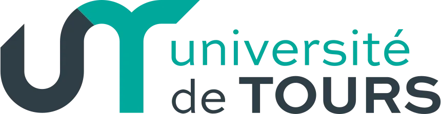
Timing: 0:20. Open with the scientific question, not the project names. Thank supervisors François Lanusse and Samuel Farrens, then say that the talk compares two ways of turning indirect astronomical measurements into representations useful for inference.
The scientific problem
From observed light to physical properties.
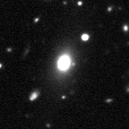
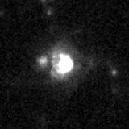
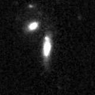
WHAT TELESCOPES RECORD light: images, spectra and photometry
→ WHAT WE WANT TO INFER redshift · mass · dust · star-formation history
Different histories of gas and stars leave different signatures in that light.
Real HSC and COSMOS validation crops · 10×10×6 run fy947o8d · step 25402.
Timing: 0:30. Read the slide from left to right: telescopes record light, while the scientific goal is to infer the physical properties that produced it. The examples are real HSC and COSMOS crops from the final 10x10x6 W&B validation, not generated images.
Two complementary approaches
Two ways to learn about galaxies.
01 Learning with physics Explain measured light with an analytic galaxy model.
Physical parameters + posterior uncertainty 02 Learning from observations Pre-train reusable representations across surveys.
Embeddings + downstream tasks Timing: 0:25. Two complementary approaches, not competing estimates of the same object.
01 · PHYSICS-CONSTRAINED
Use physics to explain the observed light.
Inferring galaxy properties from photometric measurements
Timing: 0:08. Pause. Now define the data and the forward model before introducing inference.
What we observe
Photometry measures how much light falls in each band.
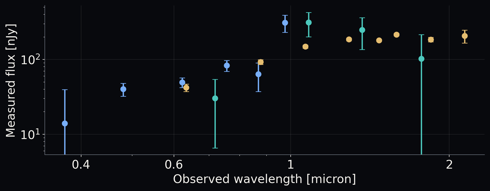
Synthetic illustration from the report; observed COSMOS provides the same kind of input.
la légende ne sert a rien
La légende redondante sous le graphique a été retirée.
Timing: 0:25. Each point is one broadband flux; the error bar is its measurement uncertainty. It is not an observed spectrum sampled at isolated wavelengths. The next slides introduce the physical spectrum and the forward model that connects it to these measurements.
From a spectrum to one measurement
A filter selects part of the spectrum.
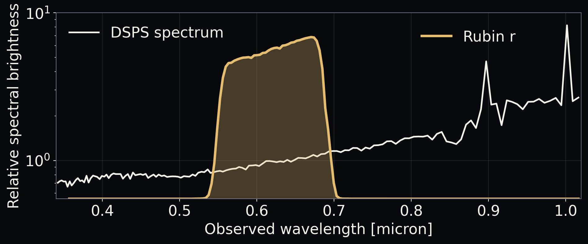
One filter selects one wavelength range.
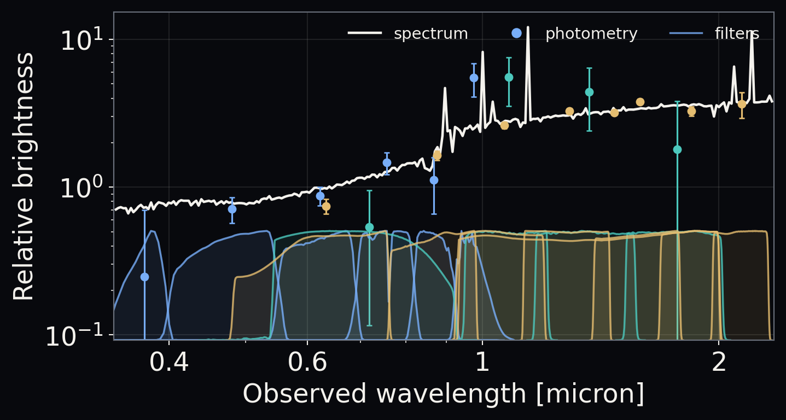
All filters produce the observed photometric vector.
Integrating through each filter turns a complete spectrum into a handful of fluxes.
DSPS synthetic object 4618 · relative visual normalization · logarithmic brightness scale.
Timing: 0:38. Begin with the left panel: one filter on a log-scaled DSPS spectrum. Advance once to reveal the compact summary with the full filter set and resulting photometry. Fluxes use a relative visual normalization here; repeating the physical integration for every filter yields the observed vector.
The forward model
Physics connects parameters to the light we measure.
1 Physical parameters mass · dust · history · redshift
→ 2 Forward model analytic galaxy physics
→ 3 Spectrum light across wavelength
→ 4 Filter integration one integral per band
→ 5 Predicted photometry compare with observations
Timing: 0:20. Read the forward chain from left to right. The forward model turns physical parameters into a full spectrum. Integrating through every survey filter gives predicted photometry, which can be compared with the measured fluxes and errors.
The inverse problem
A degenerate inverse problem.
OBSERVED photometry y ± σ
? find compatible parameters
θ different metallicity
θ more dust
θ different redshift
The analytic model is many-to-one: several parameter vectors can predict the same photometry.
Timing: 0:20. The observed side is fixed. We search for physical parameter vectors whose forward predictions reproduce it. Different metallicities, dust contents and redshifts can compensate and yield the same broadband measurements.
Why inference is ambiguous
Different spectra can give the same band fluxes.
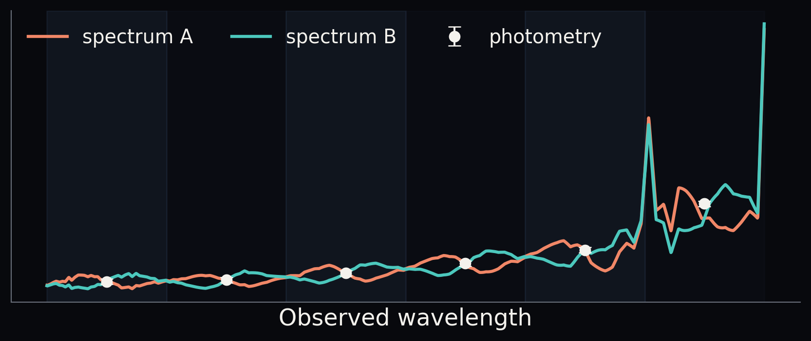
Broad bands erase information between measurements.
Pedagogical schematic: equal integrals in idealized top-hat bands; not two fitted DSPS galaxies.
Timing: 0:25. The baseline shape comes from the DSPS synthetic example. Opposite within-band perturbations create two illustrative spectra with equal band integrals. They are not two fitted galaxies.
Bayesian inference
Bayes' rule: data fit × population assumptions.
p(θ | y) ∝ p(y | θ) × pη (θ)
Posterior Which explanations remain plausible for this galaxy?
Likelihood Do the predicted fluxes reproduce its measurements?
Easy to compute with the forward model. Population prior How common are these parameters among galaxies?
Must be well defined. Timing: 0:30. Define theta and y, then read posterior, likelihood and prior. The likelihood is straightforward to evaluate with the forward model. The population prior must be well defined because it changes the posterior.
Two learning objectives
Objectives
ACROSS THE CATALOGUE Learn the population prior Which physical properties are common among galaxies?
FOR EACH GALAXY Infer its posterior Which explanations remain plausible for this observation?
Exact inference for every galaxy is expensive. → Amortized variational inference learns one reusable posterior model.
Timing: 0:30. Distinguish a distribution across the population from uncertainty about one object. Exact per-object inference is expensive, so one neural posterior is amortized across the catalogue. Selection must still be handled when relating the catalogue to the parent population; details in backup.
Fast inference
A neural posterior with a physical decoder.
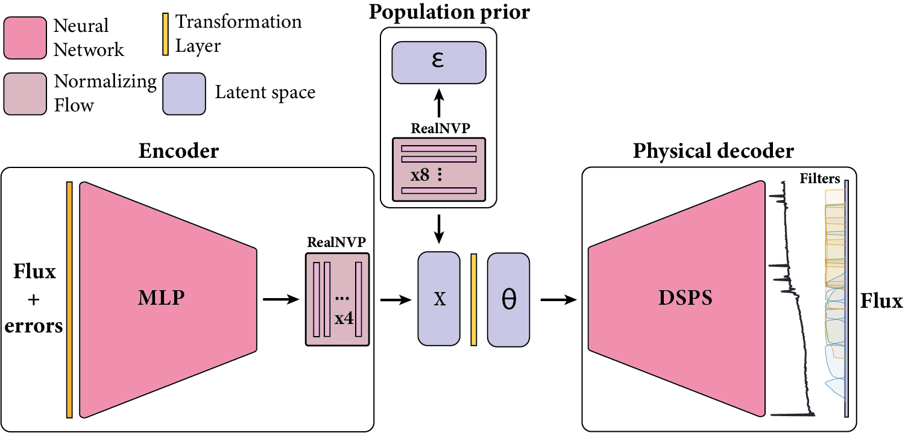
observed fluxes + errors posterior draws predicted spectrum + fluxes
les cadres sont mal cadrés. Pas besoin du cadre encoder
Le cadre Encoder a été supprimé.
les cadres ne sont ABSOLUMENT pas cohérents et centrés
Les grands cadres sont remplacés par trois cadres calibrés sur les zones exactes du schéma : flux observés, variables physiques échantillonnées et décodeur physique.
Timing: 0:35. Advance through the three tightly framed regions: measured fluxes and errors enter the encoder; the posterior draw contains the physical variables x and theta; DSPS decodes them into a spectrum and predicted fluxes.
Methodology
Alternate simulation and real observations.
SLEEP sample θ → forward model → simulated photometry → recover θ
WAKE real photometry → propose θ draws → likelihood weights → update both models
Sleep maintains proposal coverage.Wake learns from the observed catalogue.
Timing: 0:35. Sleep supplies known parameters without labels for real observations and maintains broad proposal coverage. Wake tests posterior draws against real photometry and updates both the posterior network and the population prior. This schedule mitigates poor-proposal feedback but is not a proof against collapse.
Example result
The inferred spectrum follows the true spectrum.
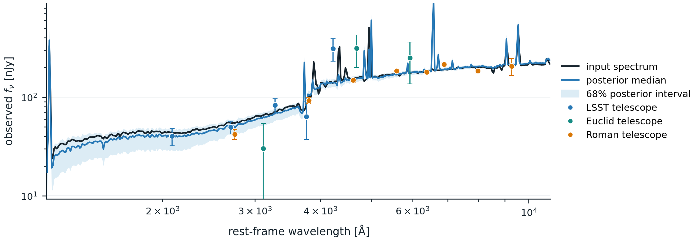
A good-looking spectrum is not enough.
1 · Is redshift accurate?
2 · Is the posterior calibrated?
Timing: 0:30. The black curve is the true DSPS spectrum; blue is the posterior median and the band is the 68% interval. It looks convincing, but visual reconstruction is not enough. The scientific tests are now stated explicitly: redshift accuracy and posterior calibration.
Evaluation data
Two datasets
CONTROLLED TEST Synthetic galaxies 15D
Every physical parameter is known.
Recovery + posterior calibration +
REAL-SKY TEST Observed COSMOS 1,395
Matched galaxies with spectroscopic redshifts.
RWS-26 + published Pop-COSMOS Why do we want to beat Pop-COSMOS?
Pop-COSMOS: Alsing et al. (2024), ApJS 274, 12; Thorp et al. (2024), ApJ 975, 145.
Timing: 0:30. Synthetic data are the controlled test because every latent truth is available. The real-sky benchmark uses the same 1,395 matched COSMOS galaxies for RWS-26 and Pop-COSMOS. End only on the question, then advance to the humorous transition.
Benchmark rivalry
They come from Cambridge. 🇬🇧
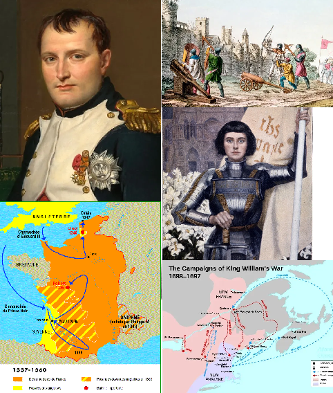
This is a matter of state. More seriously: a strong published population-level baseline on the same field and matched galaxies.
retire le sous titre
Le sous-titre sous Cambridge a été retiré.
Timing: 0:18. First show Cambridge and the flag. Advance once for the supplied historical collage and joke, then once more for the serious answer: Pop-COSMOS is a strong published population-level baseline on the same field and matched galaxies.
Point accuracy versus posterior calibration
Point accuracy ≠ posterior calibration.
POINT ESTIMATES · POSTERIOR MEDIANS 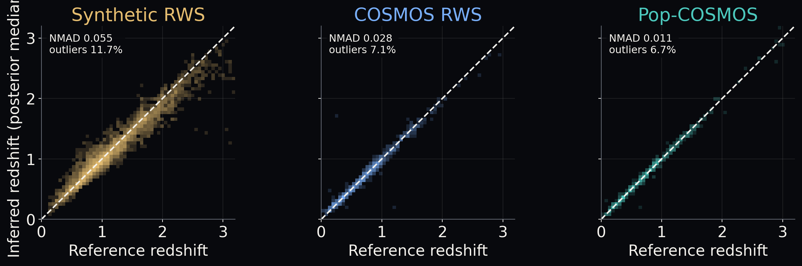
FULL POSTERIORS · PIT 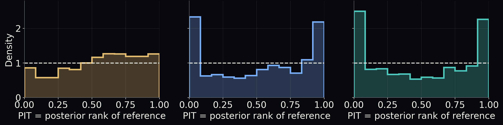
Synthetic wider point scatter · calibrated uncertaintyObserved COSMOS tighter medians · overconfident posteriors
Timing: 1:00. We evaluate whether inference recovers an interesting physical parameter; here redshift, because spectroscopic references are available. We ask two distinct questions. Top: for this pointwise diagnostic only, summarize each posterior by its median and compare it with the reference redshift; points near the diagonal are accurate. Bottom: keep the full posterior and compute its PIT, the fraction of posterior probability below the reference redshift. Across a catalogue, calibrated posteriors produce a flat PIT histogram. Peaks at both edges mean the references fall in the tails too often, so the intervals are too narrow and the model is overconfident. Synthetic point estimates are more dispersed but their PIT is nearly flat. The observed medians are tighter, while both observed PIT histograms are U-shaped. The synthetic and observed datasets are not a controlled difficulty comparison.
Calibration summary · MIRA
Are the redshift uncertainties trustworthy?
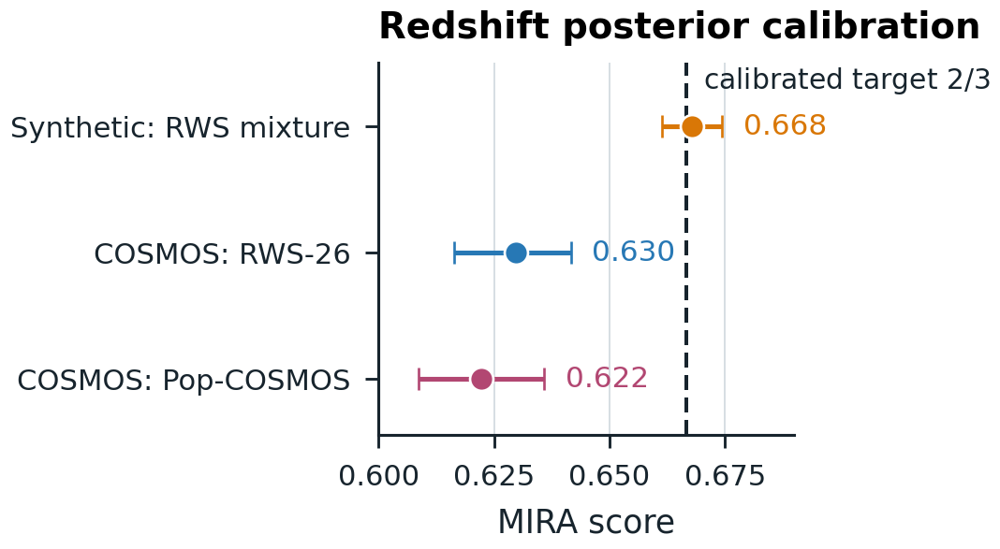
MIRA A metric for posterior calibration quality.
Do posterior regions contain the reference as often as expected?
Calibrated target: 2/3
Synthetic redshift is near target. Both observed results fall below it.
MIRA: Sharief et al. (2026), arXiv:2605.02014. This score alone does not certify absence of directional bias.
Timing: 0:40. MIRA is a metric for posterior calibration quality across many objects, not accuracy of one median. Below target can reflect overconfidence or shifts; it does not isolate their direction or cause. Redshift calibration does not establish calibration of the joint 15D posterior.
02 · DATA-DRIVEN
Learn reusable representations directly from survey data.
Continuous tokenization + multimodal foundation modelling
Timing: 0:08. Pivot from interpretable latent variables to representations learned from the surveys themselves.
Foundation models
Train once, adapt to many tasks.
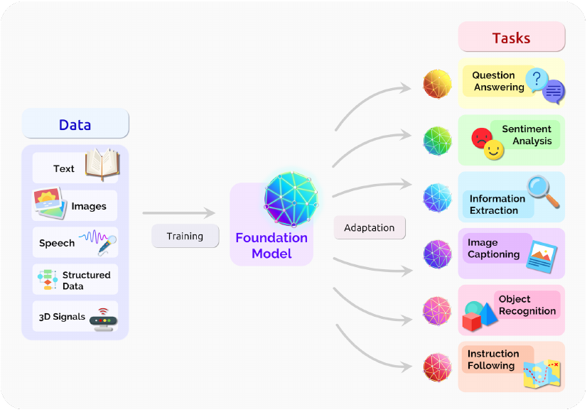
PRE-TRAIN One shared model learns from large, diverse datasets. ADAPT The same representation supports many downstream tasks.
Bommasani et al. (2021), “On the Opportunities and Risks of Foundation Models”, Fig. 2.
Timing: 0:35. A foundation model is trained once on large and diverse data, before any single final task is chosen. It learns a reusable representation. The same model can then be adapted to several downstream tasks with much smaller labelled datasets. In astronomy, the inputs become survey observations and the tasks become redshift, morphology, or other physical-property predictions.
A multimodal foundation model
AION-1 → AION-2 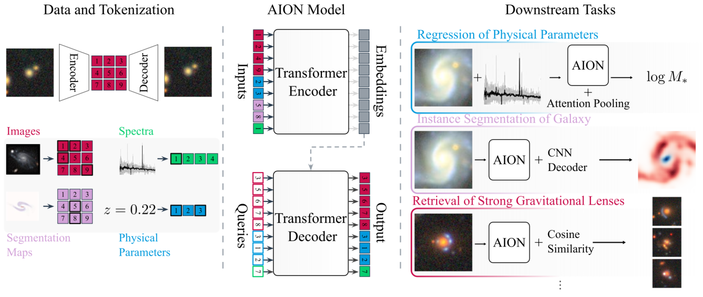
AION-1 overview: Parker et al. (2025), Fig. 1, arXiv:2510.17960. The figure describes AION-1.
Avant cette slide prend une slide foundation model avec l'image Bommasani et al. 202 des foundation model ou j'expliquerais ce que c'est
Une slide dédiée est ajoutée juste avant, avec la figure 2 de Bommasani et al. et une lecture simple “pré-entraîner une fois, adapter à plusieurs tâches”.
Timing: 0:35. This is the astronomical version of the previous idea. AION-1 tokenizes several observing modalities, processes them with a shared encoder, then supports multiple downstream tasks. Advance once to introduce AION-2. Do not claim this published diagram is the AION-2 architecture.
Second part of my internship
AION-2 improvements
AUGUST RUN HSC images Legacy Survey images DESI spectra SDSS spectra NEXT Euclid Q1 images LSST DP2 images COSMOS images More surveys broader image coverageContinuous tokens instead of discrete identifiers
Timing: 0:42. Start with the four surveys in the August run: HSC and Legacy images, DESI and SDSS spectra. Then reveal Euclid Q1, LSST DP2 and COSMOS one by one. Conclude with the two AION-2 improvements: broader survey coverage and continuous tokens rather than AION-1's discrete token identifiers.
Preparing the data
Tokenization changes the representation, not the catalogue.
For a language model, a token is a small numerical unit of input, often part of a word. For AION, each token summarizes part of an astronomical observation.
BEFORE 100 TB Raw survey observations images · spectra
all catalogued objects → tokenize once
AFTER same objects N tokens × 6 floats one compact numerical sequence per observation
stored in the data lake images 100 × 6 DESI 245 × 6 SDSS 147 × 6
retire le "instrument specific array"
La mention “instrument-specific arrays” est retirée.
"store in data lake" plutot
Le libellé devient “stored in the data lake”.
Il faut changer cette slide. AU dessus des deux bloc je veux une petite explication de ce qu'est un token pour les LLM.
Une définition comparative LLM/AION est ajoutée au-dessus du schéma et les deux blocs sont réduits pour préserver de l’air autour de l’explication.
Timing: 0:38. Start from the familiar language-model idea: a token is a small numerical unit presented to the model, often a word fragment. AION applies the same interface to astronomy: each token summarizes part of an image or spectrum. The catalogue still contains the same observations, but they are encoded once as compact sequences of six-dimensional vectors and stored in the data lake.
My contribution · image tokenizer
Choosing the image bottleneck
Image A Image B Image C Input Reconstruction 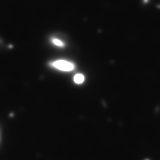
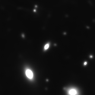
160 × 160 multi-band pixels → 100 continuous 6D tokens → reconstruction
Preserve appearance and physical information, with a sequence compact enough for AION.
HSC PDR3 DUD · real W&B validation crops · run fy947o8d · step 25402 · matched logged stretch.
Timing: 0:45. These are three real HSC PDR3 DUD validation examples from the final 10x10x6 comparison run. Each 160 by 160 multiband observation becomes 100 continuous six-dimensional tokens. The examples retain the logged input/reconstruction stretch. Visual quality is one criterion; physical and morphology preservation need separate tests.
First production run
The first AION-2 run · August 2026
199 M parameters
64 H100 16 Jean-Zay nodes
100k optimisation steps
4 surveys images + spectra
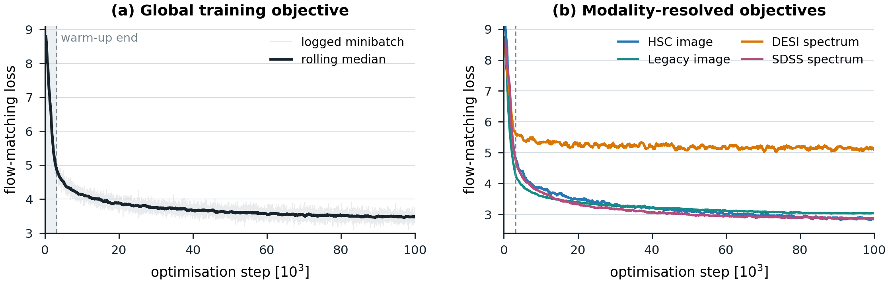
Training loss proves optimisation. Scientific value requires frozen-encoder downstream probes.
Timing: 0:40. The global objective decreases. Mention the different modality behaviours, including the DESI curve, without over-interpreting it. This plot establishes that the baseline trained, not that the embedding is scientifically useful. Source: report Sec. "August production run".
Evaluating the representation
Can embeddings recover known galaxy properties?
LABELLED GALAXIES Images / spectra
→ TOKENIZE AION inputs
→ FROZEN AION Embeddings
→ SUPERVISED PROBE Recovered properties
retire la phrase du bas. Et le bloc du bas en général. Il faut alléger la slide
Le bloc inférieur sur les labels et la phrase de comparaison sont retirés ; seul le pipeline d’évaluation reste à l’écran.
Timing: 0:25. Tokenizers and AION produce embeddings. A supervised probe learns to recover a known property while AION remains frozen. Testing on held-out galaxies tells us whether that information is accessible in the representation.
Information retained
What can a frozen AION encoder recover?
AION-2 · DESI REDSHIFT
Does the embedding preserve redshift?
R2 : 1 means all object-to-object variation is recovered.
GALAXY10 MORPHOLOGY
Can image tokens identify morphology?
AION-1-L · published
87.2% Accuracy: fraction of correctly classified test galaxies.
AION-1-L: Parker et al. (2025), published Galaxy10 result · AION-2: internship evaluation, first scale run.
Fait apparaitre les bloc 1 par 1 et retirer le "context..."
Les résultats redshift et morphologie apparaissent maintenant successivement ; le bandeau “Context, not a controlled benchmark” est retiré.
Timing: 0:45. First reveal the redshift result. With the frozen AION-2 encoder, mean pooling recovers little variation, while cross-attention reaches R squared 0.988 on 11,363 spatially held-out DESI galaxies. Then reveal morphology: the published AION-1-L paper reports 87.2 percent and the best AION-2 run reports 70.48 percent. Mention orally that these morphology values use different samples and protocols.
Synthesis
Two routes from light to useful representations.
observedlight
PHYSICS-CONSTRAINED posterior over physical parameters Interpretable by construction · explicit uncertainty
DATA-DRIVEN learned multimodal embeddings Reusable across tasks · information tested by probes
retire la scientific question je vais broder la conclusion
La question scientifique au bas de la slide est retirée afin de laisser la conclusion se faire oralement.
Timing: 0:25. Both routes begin with observed light. One representation is physically named by construction and returns a posterior; the other is learned from cross-survey data and tested through downstream probes. Use the remaining space to conclude freely.
Takeaways
Representations become scientific only when their limits are measurable.
01 Physical route
02 Data-driven route
03 Common lesson
Questions?
Maxime Ronceray · CEA Paris-Saclay / CosmoStat
Timing: 0:34. Finish on the common lesson. Total planned time: about 15:00. During questions, press down for backup slides.
Backup · methodology
Importance-weighted population learning
1 · PROPOSE
Draw several candidate θ
from the current approximate posterior qφ (θ | y)
→
2 · PREDICT
Generate a spectrum and fluxes
run each candidate θ through the DSPS physical model
→
3 · REWEIGHT
Keep plausible explanations
favour candidates that fit the fluxes and the galaxy population
candidate weight ∝ agreement with measured fluxes × population plausibility ÷ proposal probability
Learn from the weighted distribution: improve both the fast posterior proposal and the population prior.
Backup only. Weights are proportional to likelihood times prior divided by proposal density; normalized over draws. Keep the weighted distribution, not a best candidate. Population learning also accounts for catalogue selection as specified in the report. Sleep remains active as wake learning increases.
Backup · training objective
Score candidates, then learn from their weights.
1 · LIKELIHOOD Student-t with ν = 2 Robustly compare each predicted and measured band.
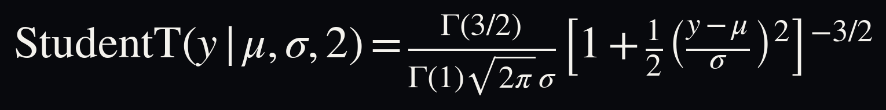
2 · RWS LOSS Weighted posterior learning Train the proposal on all weighted candidate draws.
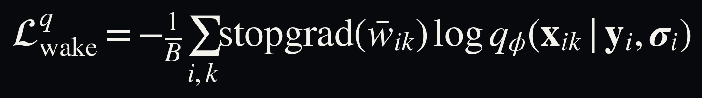
Report Eqs. observation-likelihood and wake-losses. The population loss adds the analogous weighted term and selection correction.
Est-ce que cette slide n'irait pas en appendix
Oui : la fonction objectif a été retirée du parcours principal et déplacée dans les slides de backup sous Questions.
Backup only. The Student-t likelihood scores flux agreement in each band; its product enters the importance weight. The wake loss trains q_phi using normalized candidate weights held fixed by stop-gradient. The population flow has an analogous weighted loss plus the selection-normalization term. These are distributions of draws, never a best-candidate target.
Backup · DSPS calibration
Joint calibration changes with the coordinates tested.
Coordinates tested jointly MIRA
Redshift 0.668 Physical parameters (5D) 0.642 SFH contrasts (10D) 0.692 Full latent space (15D) 0.691
A calibrated redshift marginal does not imply a calibrated 15D posterior.
Source: report Table 2 and Fig. 8. The calibrated MIRA reference is 2/3.
Backup · image tokenizer
No bottleneck wins on every morphology metric.
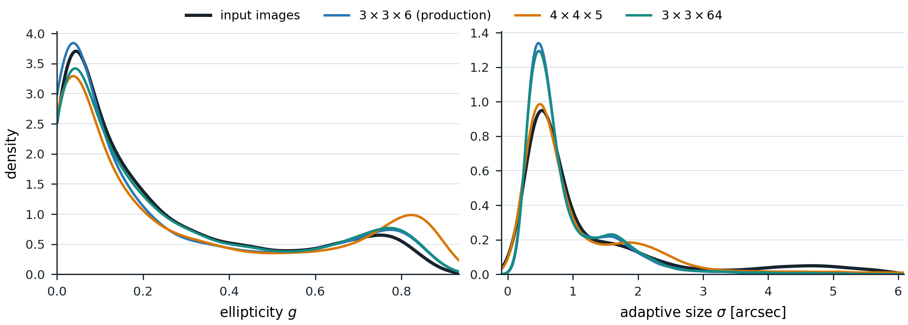
3 x 3 x 6 production ellipticity WD 0.019 compact sequence
4 x 4 x 5 alternative size WD 0.127 arcsec ellipticity WD rises to 0.051
Measured on the same 10,000 HSC r-band images. WD: Wasserstein distance, lower is better.
Backup · AION-2 inventory
Production tokens remain independent, versioned survey tables.
Survey Tokenizer Token shape Rows
HSC ImageTokenizer 9 x 6 474,954 Legacy Survey South ImageTokenizer 9 x 6 123,159,232 DESI SpectrumTokenizer 245 x 6 1,126,441 SDSS SpectrumTokenizer 147 x 6 806,176
Crossmatches store row references; they do not duplicate token arrays into one giant table.
Source: report Table 4, "Jean-Zay token tables".